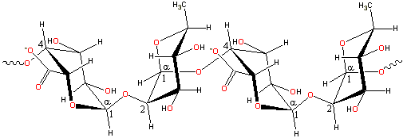

Apples;
a good source of pectin
Pectin is a heterogeneous grouping of acidic structural polysaccharides found in fruit and vegetables which form acid-stable gels.
Pectin ( E440 ) is found in fruit and vegetables (reviewed in [1581]) and is mainly prepared from 'waste' citrus peel and apple pomace. It makes up between 2% and 35% of plant cell walls [1680] and is important for plant growth, ion regulation, water exchange, development, and defense.
Pectin has a complex structure with an α-(1 4)-linked D-galacturonic acid polysaccharide backbone. Preparations consist
of substructural entities that depend on their source and extraction
methodology. Commercial extraction causes extensive degradation
of the neutral sugar-containing side chains.
4)-linked D-galacturonic acid polysaccharide backbone. Preparations consist
of substructural entities that depend on their source and extraction
methodology. Commercial extraction causes extensive degradation
of the neutral sugar-containing side chains.
Pectin; a representative structure of smooth bits
The majority of the structure
consists of homopolymeric partially 6-methylated, and 2- and 3- acetylated poly-α-(1 4)-D-galacturonic
acid residues ('smooth', see right) but there are substantial
'hairy' non-gelling areas (see below) of alternating α -(1
4)-D-galacturonic
acid residues ('smooth', see right) but there are substantial
'hairy' non-gelling areas (see below) of alternating α -(1 2)-L-rhamnosyl-α -(1
2)-L-rhamnosyl-α -(1 4)-D-galacturonosyl sections
containing branch-points with mostly neutral side chains (1
- 20 residues) of mainly α -L-arabinofuranose and α -D-galactopyranose (rhamnogalacturonan I). Also present from some sources are xylogalacturonan blocks of α-(1
4)-D-galacturonosyl sections
containing branch-points with mostly neutral side chains (1
- 20 residues) of mainly α -L-arabinofuranose and α -D-galactopyranose (rhamnogalacturonan I). Also present from some sources are xylogalacturonan blocks of α-(1 4)-D-galacturonic
acid units, partially substituted at the O-3 position with single non-reducing β-D-xylopyranose or with longer (dimer to octamer) β-D-xylopyranose chains.
4)-D-galacturonic
acid units, partially substituted at the O-3 position with single non-reducing β-D-xylopyranose or with longer (dimer to octamer) β-D-xylopyranose chains.
Pectins
may also contain rhamnogalacturonan II side chains containing other residues such as D-xylose, L-fucose,
D-glucuronic acid, D-apiose, 3-deoxy-D-manno-2-octulosonic
acid (Kdo) and 3-deoxy-D-lyxo-2-heptulosonic acid
(Dha) attached to poly-α-(1 4)-D-galacturonic
acid regions [478].
4)-D-galacturonic
acid regions [478].
Pectin 'hairy' bits; complex mixed structures

[Back to Top  ]
]
Generally, pectins do not possess exact structures [328]. It may contain up to 17 different monosaccharides and over 20 types of different linkages. Its structure and biosynthesis have been reviewed, with its biosynthesis requiring at least 67 transferases [1459]. D-galacturonic acid residues form
most of the molecules in blocks of 'smooth' and 'hairy' regions.
The molecule does not adopt a straight conformation in solution
but is extended and curved ('worm-like') with a large amount of
flexibility. The `hairy' regions of pectins are even more flexible
and may have pendant arabinogalactans. The carboxylate groups tend
to expand the structure of pectins as a result of their charge
unless they interact through divalent cationic bridging (their pKa of about 2.9 [326] ensuring
considerable negative charge under most circumstances). Methylation
of these carboxylic acid groups forms their methyl esters, which
take up a similar space but are much more hydrophobic and consequently
have a different effect on the structuring of the surrounding water.
The properties of pectins depend on the degree of esterification,
which is usually about 70%. Low methoxyl-pectins (< 40% esterified)
gel by calcium di-cation bridging between adjacent two-fold helical
chains forming so-called 'egg-box' junction zone structures so long
as a minimum of 14-20 residues can cooperate [326].
The 'egg-box' structuring has been reviewed [4233]. Gel strength increases with increasing Ca2+ concentration
but reduces with temperature and acidity increase (pH < 3) [463].
It may well be that the two carboxylate groups have to cooperate
in prizing the bound water away from the calcium ions to
form the salt links that make up these junction zones. Low methoxyl pectin has a less demarked dimerization step than alginates due to the random distribution of ester and amide groups along the pectin chain [1380]. The gelling
ability of the di-cations is similar to that found with the alginates ( Mg2+ ≪ Ca2+,
Sr2+ < Ba2+) [2644] with Na+ and K+ not gelling. The cross-links formed must be strong enough and numerous enough to allow the dimerization step to occur in competition to binding to water molecules (Mg2+ too strong). High methoxyl pectin shows a negligible dimerization upon binding with calcium due to the lack of sufficient carboxylate groups. If the methoxyl esterified content is greater than
about 50%, calcium ions show some interaction but do not gel. The
similarity to the behavior of the alginates is that poly-α-(1 4)-D-galacturonic
acid is almost the mirror image of poly-α-(1
4)-D-galacturonic
acid is almost the mirror image of poly-α-(1 4)-L-guluronic
acid, the only difference being that the 3-hydroxyl group is axial
in the latter. The controlled removal of methoxyl groups, converting
high methoxyl pectins to low-methoxyl pectins, is possible using
pectin methylesterases but the reverse process is not easily achieved.
4)-L-guluronic
acid, the only difference being that the 3-hydroxyl group is axial
in the latter. The controlled removal of methoxyl groups, converting
high methoxyl pectins to low-methoxyl pectins, is possible using
pectin methylesterases but the reverse process is not easily achieved.
High methoxyl-pectins (> 43% esterified, usually
≈ 67%) gel by the formation of hydrogen-bonding and hydrophobic
interactions in the presence of acids (pH ≈ 3.0, to reduce
electrostatic repulsions) and sugars (for example, about
62% sucrose by weight, to reduce polymer-water interactions)
[664]. Low methoxy-pectins
(≈ 35% esterified), in the absence of added cations, gel by
the formation of cooperative 'zipped' associations at low
temperatures (≈ 10 °C) to form transparent gels [684].
This hydrogen-bonded association is likely to be similar to
that of alginate (see above). The
rheological properties of low methoxy-pectins are highly dependent
on the salt cation, salt concentration, and pH. [Back to Top  ]
]
Pectins are mainly used as gelling agents but can also act as a thickener, water binder, and stabilizer. The binding of water by pectins has been reviewed [3422]. Christiaens et al., [2572] describe enzymic and non-enzymic pectin conversions during food processing and process–structure-function relations. Due to its structural complexity, food processing of pectins may result in complex and somewhat unpredictable effects on texture, viscosity, and gel formation. Advances in its production, its role as a nutraceutical, its possible prebiotic potential, and its use as a delivery vehicle for probiotics have been reviewed [2898].
Low methoxyl pectins (< 50% esterified) form thermoreversible gels in the presence of calcium ions and at low pH (3 - 4.5), whereas high methoxyl pectins rapidly form thermally irreversible gels in the presence of sufficient (for example, 65% by weight) sugars such as sucrose and at low pH (< 3.5); the lower the methoxyl content, the slower the set. The degree of esterification can be (incompletely) reduced using commercial pectin methylesterase, leading to a higher viscosity and firmer gelling in the presence of Ca2+ ions. Highly (2-O- or 3-O-galacturonic acid backbone) acetylated pectin from sugar beet is reported to gel poorly but has considerable emulsification ability due to its more hydrophobic nature, but this may be due to associated protein impurities [309].
As with other viscous polyanions such as carrageenan, pectin may be protective towards milk casein colloids, enhancing whey's protein properties (foam stability, solubility, gelation, and emulsification) while utilizing them as a source of calcium. Thus, mixtures of casein and pectin can be used to formulate acidified milk drinks, emulsions, edible packaging film, and fat replacements [3866].
Increasingly, dietary pectin may have some health benefits beyond its role as a beneficial dietary fiber. Small pectin fragments have a positive effect as an anti-cancer agent as they bind to and inhibit the various actions of the pro-metastatic protein galectin-3 [1797]. They may also act as an antimicrobial agent [4179]. Pectin degradation has a significant effect on fruit softening, so determining fruit shelf life and commercial value [3514].
Interactive structures are available (Jmol). [Back to Top  ]
]
Home | Site Index | Hydrocolloids | Polysaccharide hydration | hydrogen-bonding | LSBU | Top
This page was established in 2001 and last updated by Martin Chaplin on 22 October, 2021